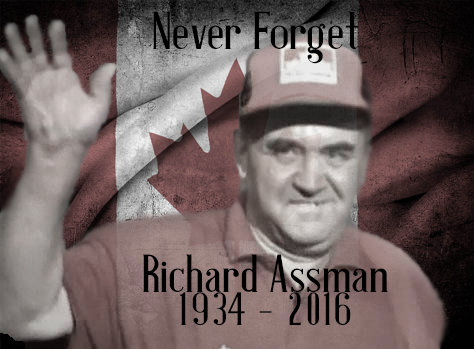

This shirt is in remembrance of Dick Assman, a gas station worker turned into a celebrity by David Letterman. God rest his soul.
Next, I made a hat with sublimation printing.
Here's my picture if you want to share the word of assman to your peers.